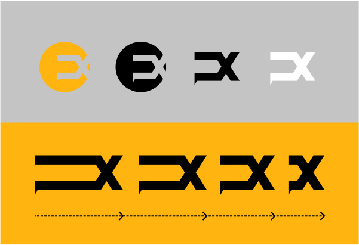
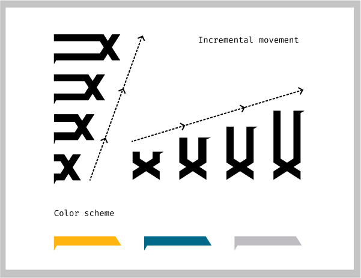

Process overview
Undefine (x) is a Toronto based apparel brand for running and cycling.The brief was to create a simple, creative, colorful rebranding.
The main challenge was to create a complete new brand aligned with the previous one. This included the creation of a single visual element that can be easily recognizable.

Starting poing
My initial approach was to work with the previous brand name (ubx) as the main element. After sketching a few versions on paper and exploring different fonts, I decided to go with the one with cleaner lines and defined edges.
Because their main product is socks, the logo has to go through a manufacturing process, so the less intricate the better.
Execution
For the single visual element, I added a circle as a way to indicate the idea of going outside the boundaries.
For the secondary elements, my intention was to convey movement and the active lifestyle the brand embodies, with the use of the elongation and repetition of the main visual element along two axis.
Challenges
An interesting and challenging part of the project was to create new design patterns for socks.
I created 4 patterns and with them, I made almost 80 iterations of color schemes.
My proposals were not chosen for manufacturing but it was a great exercise.
I was able to think about the challenges of moving a design from a two dimensional setting into a three dimensional one.
It was also a great exercise because I learned that I can achieve the same goal (showing my ideas and send them for feedback) if I do three very well thought designs instead of 20.
Reducing output, having criteria and being selective is a great skill to have.